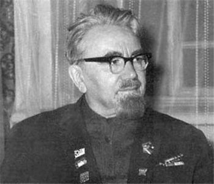

|

Александр Петрович Казанцев (2 сентября 1906, город Акмолинск, Акмолинский уезд, Акмолинская область, Российская империя — 13 сентября 2002, Переделкино, Российская Федерация) — один из известнейших советских и российских фантастов.
Награды:
Награждён орденами Отечественной войны, Красной звезды, Трудового Красного Знамени, Дружбы Народов, орденом «Знак Почёта», медалями.
Интересные факты:
• Казанцев придумал и ввёл в русский язык более 100 новых слов, среди них, например, инопланетяне и (по одной из версий) вертолет.
• Казанцев был одним из двух прототипов Амвросия Амбруазовича Выбегалло. Другим и главным прототипом был Трофим Денисович Лысенко.
Произведения
Циклы:
• Георгий Седов
• Ныряющий остров (1958)
• Находка (1958)
• Против ветра (1950)
• Марсианин (1958)
• Трехлапая (1951)
• В тумане (1951)
• Катер в море (1950)
• Сухопутный моряк (1973)
• На короткой волне (1973)
• Пластинка из слоновой кости (1949)
• Остановленная волна (1950)
• Полярный Варяг (1951)
• Гость из космоса (1951)
• Возвращение в грядущее
• Тайна нуля (1988)
• Донкихоты Вселенной (1988)
• Спустя тысячелетие (1997)
• Клокочущая пустота
• Острее шпаги (1983)
• Колокол Солнца (1984)
• Иножитель (1986)
• Небывалые были
• Народные артисты леса (1975)
• Матч антимиров (1973)
• Полярное противостояние
• Подводное солнце: (Мол «Северный») (1970)
• Арктический мост (1941)
• Льды возвращаются (1964)
• Теплоход «Победа»
• Звездные пришельцы (1963)
• Кусок шлака (1963)
• Визитные карточки с других планет (1967)
Романы:
• 1941 Арктический мост
• 1941 Пылающий остров
• 1952 Мол «Северный»
• 1956 Полярная мечта: (Мол «Северный»)
• 1964 Льды возвращаются
• 1970 Подводное солнце: (Мол «Северный»)
• 1973 Сильнее времени
• 1973 Фаэты
• 1980 Купол надежды
• 1983 Острее шпаги
• 1984 Колокол Солнца
• 1984 Мост дружбы
• 1986 Иножитель
• 1988 Донкихоты Вселенной
• 1988 Тайна нуля
• 1992 Иномиры
• 1996 Озарения Нострадамуса
• 1997 Спустя тысячелетие
• 2000 Звезда Нострадамуса
• 2001 Фантаст Соавтор: Никита Казанцев
Повести:
• 1946 Живое ущелье
• 1960 Лунная дорога
• 1962 Внуки Марса
• 1963 Планета бурь
• 1986 Тайна загадочных знаний
|